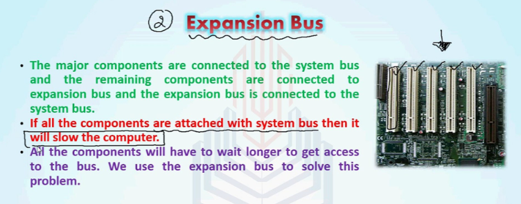
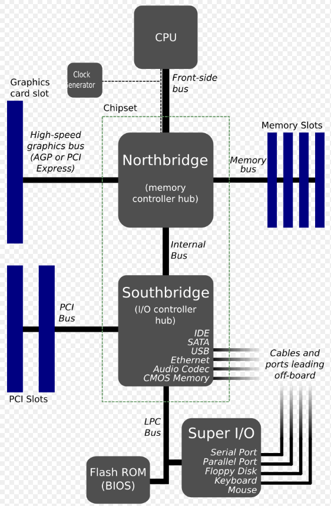

Computer hardware refers to the physical components of a computer system that can be seen and touched, such as the central processing unit (CPU), random access memory (RAM), hard disk drive (HDD), keyboard, mouse, and monitor. These components work together to enable a computer to perform various tasks.
Some Important Hardware
Power Supply: Another responsibility of the motherboard is to ensure all all the components get the right amount of electricity. This electricity comes to the computer through a power supply unit. Power supplies take AC power from a wall outlet and covert it into DC power.
Network Interface Card(NIC): Today, most computers need to connect to the internet. That's the job of the Network Interface Card, or NIC. Some motherboards have a NIC built in, while others need one to be added on. Some NIC's are for wired, some wireless, and some for both.
Graphics Processing Unit(GPU): The CPU is the main processor in a computer, but computers require additional processing power for creating images and graphics. This is supplied by the Graphical Processing Unit, or GPU. Most Computers today handle graphics processing through the CPU and RAM, this is called integrated graphics (or onboard graphics). But computers that are used for gaming, video editing, 3D modeling and animation will need a GPU that's dedicated to graphics processing. The best graphics card will be expensive because they also contain their own specialized ram, processors and cooling systems.
Cooling Systems: One of the problems of high speed computing is that it produces a lot of heat. a typical desktop CPU can get hot enough to boil water. This much heat can damage internal components. In a typical desktop system cooling is done via Heatsinks and fans, in higher end systems water cooling can be used as well.
Internal Computing Components
CPU: The most important part of any modern computer system is the central processing unit, or CPU. Just like the brain controls the body, the CPU controls the other parts of the computer by getting information from them, then telling them what to do. After receiving raw input data from the user, the CPU applies the data to a list of instructions, called a computer program. Then the CPU executes each line of the computer program in order, turning the data from the user into information. This is called processing.
RAM: The CPU is great at performing calculations, but it can only deal with one line of code at a time - it can't keep track of the whole program at once. Instead, the computer stores this info in RAM, or Random-Access Memory. When you run a program, the computer loads the instructions in RAM. Then, the CPU takes the first line of instructions from RAM, Executes its and writes the results back to RAM to use later. RAM is extremely fast, but it's also volatile. If you turn off the computer, RAM will forget everything it was holding. For this reason, RAM is sometimes called "short term memory" - it's only concerned with whatever the computer is using right now.
Motherboard: The CPU and RAM are connected by a large flat component called the motherboard. The Motherboard is like the spine in your body, it connects all the other parts to each other and sends electrical signals between them. An important part of the motherboard is a chip that contains the BIOS, or Basic Input Output System (or UEFI, Unified Extensible Firmware Interface). When you start a computer, the BIOS makes sure all necessary parts are plugged in and working properly, then it tells the Operating System to load.
Buses
In addition to the internal computing components listed above, computer systems also use buses to transfer data between components. A bus is a communication system that connects various components of a computer and facilitates the transfer of data between them.

There are a variety of different types of buses used in computer systems, each with different characteristics and uses. Some of the most common types of buses include:
System bus: Also known as the front-side bus, this bus connects the CPU to main memory and other components, such as the video card and hard disk drive.
Expansion bus: This bus provides a way to add additional components to a computer system, such as a video card or network card. Common expansion buses include the Peripheral Component Interconnect (PCI) and the Accelerated Graphics Port (AGP).
Backplane bus: This bus is used in large computer systems, such as servers, to connect multiple components and provide a high-speed data transfer path.
Internal bus: This bus is used to connect components that are located within a single device, such as a hard disk drive.
Buses are an important part of computer systems, as they enable different components to communicate with one another and work together to perform various tasks.
Computer Buses
In computers, the bus is responsible for transferring the following:
Power: Each component requires electricity; the bus provides this power.
Data: The data is the information that is transferred between the components in the computer.
Memory Location: Memory temporarily stores the data while it's needed for processing. The bus keeps track of the address or location where the data is stored in the memory.
Clock Timing: A computer has a clock mechanism, often performed by the CPU, which synchronizes how all the components work together over the bus.

Throughout the years, the architecture of the expansion bus has changed. Since the architecture of the bus is dependent on the motherboard and CPU, it’s important to know the types of bus systems that have been and are being used:
PCI
The PCI (Peripheral Component Interconnect) bus is a standard hardware interface used in computers to connect peripheral devices—like network cards, sound cards, or graphics cards—to the CPU and memory. It acts as a shared communication pathway, allowing devices to send and receive data efficiently
PCIe
PCI Express, or PCIe, is a next-generation I/O bus architecture. Rather than a shared bus, each PCIe slot links to a switch which prioritizes and routes data through a point-to-point dedicated connection and provides a serial full-duplex method of transmission. PCIe is backwards compatible and allows legacy PCI technology to run in the same system. PCIe buses are most commonly used for video cards in modern computer systems, although nearly any device can be designed for a PCIe slot.
Basic PCIe provides one lane for transmission (x1), at a transfer rate of 250 MBps. It can also provide multiple transmission lanes (x2, x4, x8, x16, x32). Newer versions of PCIe can transfer data at an even higher rate per lane:
Version 1: 250 MBps
Version 2: 500 MBps
Version 3: 1 GBps
Version 4: 2 GBps
PCI with AGP
AGP is similar to PCI but designed specifically for graphics support. Motherboards that provide AGP support have a single AGP slot. AGP is commonly used for video cards in modern computer systems but has been replaced by PCIe.
Computer Hardware Types
All of these different components can be categorized into four main types of computer hardware: (Note: these are also the four functions that represent how data moves through your system, just in a slightly different order.)
Input devices: These are used to input data and commands into a computer system. Examples include keyboards, mice, scanners, and cameras.
Output devices: These are used to display or output data from a computer system. Examples include monitors, printers, and speakers.
Processing devices: These are used to process data and perform calculations. The CPU and RAM are examples of processing devices.
Storage devices: These are used to store data and programs. Examples include hard disk drives, solid-state drives, and USB flash drives.
Peripheral devices and input/output (I/O) devices are often used interchangeably, but they are not exactly the same thing. Peripheral devices are a broad category that includes any device that can be connected to a computer system, such as printers, scanners, and cameras. I/O devices, on the other hand, specifically refer to devices that are used for input and output operations, such as keyboards, mice, and monitors. While all I/O devices are considered peripheral devices, not all peripheral devices are I/O devices.
Next, Complete CompTIA A+ Lesson 2
If the embed doesnt work, use the button instead.
Power-On Self Test
The POST (Power-On Self-Test) is a diagnostic testing sequence that a computer performs when first powered on.
When you press the power button, before loading any operating system, your computer's BIOS/UEFI firmware initiates POST to check that essential system components are present and functioning correctly. The sequence typically includes:
Checking the CPU and clock
The CPU performs a simple self-test and verification of its registers
The system clock is checked to ensure it's running at the correct frequency
Verifying system memory(RAM)
POST writes a test pattern to every memory address, It then reads back these patterns to verify data integrity
Initializing core motherboard components
The chipset and bus controllers are initialized
Basic voltage and power readings are verified
Detecting and initializing storage devices
POST identifies all storage devices (HDDs, SSDs, optical drives)
The BIOS/UEFI queries each device through the storage controllers
Boot device order is determined based on BIOS settings
Testing basic input/output systems (keyboard, display)
Basic keyboard controller initialization occurs
Video memory is tested and basic display output is verified
USB controllers are initialized
If POST encounters any critical errors, it usually communicates through a series of beep codes or error messages since the display may not be initialized yet. For example, a series of long beeps might indicate a RAM failure.
Once POST completes successfully, the system proceeds to boot the operating system. If POST fails, the computer won't boot at all - this helps prevent damage and alerts users to hardware problems.
Computer Types
Desktops: Often referred to as workstations or PCs, desktops are computer systems small enough to fit on, under, or near a desk. They are widely used for business, industry, and home use. Desktop systems are equipped with peripheral devices such as a monitor, keyboard, mouse, and speakers. They have several advantages including modularity, ease of repair and upgrade, the power to run CPU-intensive tasks, and storage capacity to handle larger amounts of data than other devices. However, they are not mobile and require continuous access to an A/C power outlet.
All-in-one devices: These types of desktop computers contain every component except the keyboard and mouse in the same case as the monitor. They require less space than a desktop and are easy to move to a new location. However, they are harder and more expensive to repair, and in most cases, you are not able to expand the memory or disk space.
Notebooks and laptops: Also known as subnotebooks, these computers have all components built into one case. They can run the same productivity applications as desktop systems, are smaller, weigh less, use less power than desktop systems, and include batteries that allow them to run without external power for a period of time. They are mobile and often include built-in wireless networking. However, they are more difficult to upgrade or repair, usually more expensive than comparable desktop systems, and typically have less computing power than comparable desktops.
Hybrid laptop devices (2-in-1): These computers cater to the needs of both tablet and laptop users. They provide a touchscreen and other tablet-style conveniences but also provide an operating system and keyboard.
Gaming consoles: These are computer systems specifically built to be operated by a gaming pad instead of a keyboard and mouse. They include major computer components, such as CPU, GPU, RAM, an operating system, disk storage, etc. These components are designed to work best with games and the high graphics capabilities required by these games.
Network Client: This is a device that can connect to a network. All the above devices can be network clients.
Mobile Devices: These are small computing devices, such as tablets and smartphones. They are much more mobile than any other type of computing device and include a variety of integrated devices, such as cameras, microphones, and wireless networking. However, they are difficult to repair and nearly impossible to upgrade.
Servers: These are computers whose purpose is to provide shared disk storage or to perform a special service for a large number of people, such as web processing, email, or database services. Servers are widely used in business and typically have more memory, disk space, and processing power than a desktop computer.